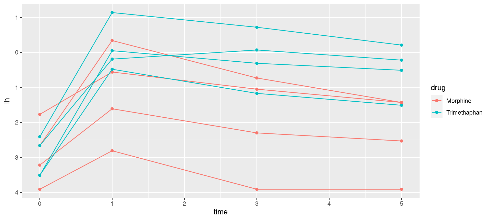
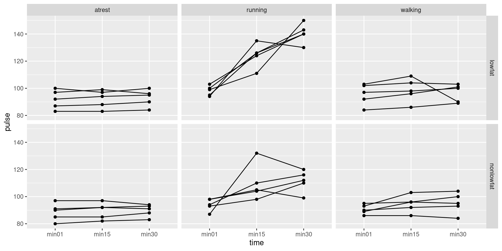

Repeated measures analysis
Repeated measures by profile analysis
More than one response measurement for each subject. Might be
measurements of the same thing at different times
measurements of different but related things
Generalization of matched pairs (“matched triples”, etc.).
Variation: each subject does several different treatments at different times (called crossover design).
Expect measurements on same subject to be correlated, so assumptions of independence will fail.
Called repeated measures. Different approaches, but profile analysis uses
Manova(set up right way).Another approach uses mixed models (random effects).
Packages
Example: histamine in dogs
8 dogs take part in experiment.
Dogs randomized to one of 2 different drugs.
Response: log of blood concentration of histamine 0, 1, 3 and 5 minutes after taking drug. (Repeated measures.)
Data in
dogs.txt, column-aligned.
Read in data
Setting things up
# A tibble: 8 × 7
dog drug x lh0 lh1 lh3 lh5
<chr> <chr> <chr> <dbl> <dbl> <dbl> <dbl>
1 A Morphine N -3.22 -1.61 -2.3 -2.53
2 B Morphine N -3.91 -2.81 -3.91 -3.91
3 C Morphine N -2.66 0.34 -0.73 -1.43
4 D Morphine N -1.77 -0.56 -1.05 -1.43
5 E Trimethaphan N -3.51 -0.48 -1.17 -1.51
6 F Trimethaphan N -3.51 0.05 -0.31 -0.51
7 G Trimethaphan N -2.66 -0.19 0.07 -0.22
8 H Trimethaphan N -2.41 1.14 0.72 0.21response <- with(dogs, cbind(lh0, lh1, lh3, lh5))
dogs.1 <- lm(response ~ drug, data = dogs)
response lh0 lh1 lh3 lh5
[1,] -3.22 -1.61 -2.30 -2.53
[2,] -3.91 -2.81 -3.91 -3.91
[3,] -2.66 0.34 -0.73 -1.43
[4,] -1.77 -0.56 -1.05 -1.43
[5,] -3.51 -0.48 -1.17 -1.51
[6,] -3.51 0.05 -0.31 -0.51
[7,] -2.66 -0.19 0.07 -0.22
[8,] -2.41 1.14 0.72 0.21The repeated measures MANOVA
Get list of response variable names; we call them times. Save in data frame.
Fitting the model
The output (some; there is a lot)
Type II Repeated Measures MANOVA Tests:
------------------------------------------
Term: (Intercept)
Response transformation matrix:
(Intercept)
lh0 1
lh1 1
lh3 1
lh5 1
Sum of squares and products for the hypothesis:
(Intercept)
(Intercept) 285.366
Multivariate Tests: (Intercept)
Df test stat approx F num Df den Df Pr(>F)
Pillai 1 0.763467 19.36642 1 6 0.0045648 **
Wilks 1 0.236533 19.36642 1 6 0.0045648 **
Hotelling-Lawley 1 3.227738 19.36642 1 6 0.0045648 **
Roy 1 3.227738 19.36642 1 6 0.0045648 **
---
Signif. codes: 0 '***' 0.001 '**' 0.01 '*' 0.05 '.' 0.1 ' ' 1
------------------------------------------
Term: drug
Response transformation matrix:
(Intercept)
lh0 1
lh1 1
lh3 1
lh5 1
Sum of squares and products for the hypothesis:
(Intercept)
(Intercept) 46.08
Multivariate Tests: drug
Df test stat approx F num Df den Df Pr(>F)
Pillai 1 0.3426263 3.127229 1 6 0.12741
Wilks 1 0.6573737 3.127229 1 6 0.12741
Hotelling-Lawley 1 0.5212048 3.127229 1 6 0.12741
Roy 1 0.5212048 3.127229 1 6 0.12741
------------------------------------------
Term: times
Response transformation matrix:
times1 times2 times3
lh0 1 0 0
lh1 0 1 0
lh3 0 0 1
lh5 -1 -1 -1
Sum of squares and products for the hypothesis:
times1 times2 times3
times1 18.9728 -11.103400 -4.0810000
times2 -11.1034 6.498012 2.3883125
times3 -4.0810 2.388313 0.8778125
Multivariate Tests: times
Df test stat approx F num Df den Df Pr(>F)
Pillai 1 0.949879 25.26898 3 4 0.0046308 **
Wilks 1 0.050121 25.26898 3 4 0.0046308 **
Hotelling-Lawley 1 18.951738 25.26898 3 4 0.0046308 **
Roy 1 18.951738 25.26898 3 4 0.0046308 **
---
Signif. codes: 0 '***' 0.001 '**' 0.01 '*' 0.05 '.' 0.1 ' ' 1
------------------------------------------
Term: drug:times
Response transformation matrix:
times1 times2 times3
lh0 1 0 0
lh1 0 1 0
lh3 0 0 1
lh5 -1 -1 -1
Sum of squares and products for the hypothesis:
times1 times2 times3
times1 7.60500 2.0572500 -0.0292500
times2 2.05725 0.5565125 -0.0079125
times3 -0.02925 -0.0079125 0.0001125
Multivariate Tests: drug:times
Df test stat approx F num Df den Df Pr(>F)
Pillai 1 0.894761 11.33619 3 4 0.020023 *
Wilks 1 0.105239 11.33619 3 4 0.020023 *
Hotelling-Lawley 1 8.502141 11.33619 3 4 0.020023 *
Roy 1 8.502141 11.33619 3 4 0.020023 *
---
Signif. codes: 0 '***' 0.001 '**' 0.01 '*' 0.05 '.' 0.1 ' ' 1
Univariate Type II Repeated-Measures ANOVA Assuming Sphericity
Sum Sq num Df Error SS den Df F value Pr(>F)
(Intercept) 71.342 1 22.1026 6 19.3664 0.004565 **
drug 11.520 1 22.1026 6 3.1272 0.127406
times 26.160 3 2.2534 18 69.6546 4.215e-10 ***
drug:times 5.111 3 2.2534 18 13.6095 7.050e-05 ***
---
Signif. codes: 0 '***' 0.001 '**' 0.01 '*' 0.05 '.' 0.1 ' ' 1
Mauchly Tests for Sphericity
Test statistic p-value
times 0.12334 0.084567
drug:times 0.12334 0.084567
Greenhouse-Geisser and Huynh-Feldt Corrections
for Departure from Sphericity
GG eps Pr(>F[GG])
times 0.52618 3.745e-06 ***
drug:times 0.52618 0.002349 **
---
Signif. codes: 0 '***' 0.001 '**' 0.01 '*' 0.05 '.' 0.1 ' ' 1
HF eps Pr(>F[HF])
times 0.6822614 1.843418e-07
drug:times 0.6822614 7.307096e-04What there is here
three sets of tests, for
- times
- drug
- their interaction
two types of test for each of these:
- multivariate
- univariate
multivariate is the same as MANOVA
univariate is more powerful if it applies
Sphericity
- The thing that decides whether the univariate tests apply is called “sphericity”.
- This holds if the outcomes have equal variance (to each other) and have the same (positive) correlation across subjects.
- Tested using Mauchly’s test (part of output)
- If sphericity rejected, there are adjustments to the univariate P-values due to Huynh-Feldt and Greenhouse-Geisser. Huynh-Feldt better if responses not actually normal (safer).
Univariate tests
Test statistic p-value
times 0.12334 0.084567
drug:times 0.12334 0.084567 GG eps Pr(>F[GG]) HF eps Pr(>F[HF])
times 0.5261798 3.744618e-06 0.6822614 1.843418e-07
drug:times 0.5261798 2.348896e-03 0.6822614 7.307096e-04
attr(,"na.action")
(Intercept) drug
1 2
attr(,"class")
[1] "omit" Sum Sq num Df Error SS den Df F value Pr(>F)
(Intercept) 71.342 1 22.1026 6 19.3664 0.004565 **
drug 11.520 1 22.1026 6 3.1272 0.127406
times 26.160 3 2.2534 18 69.6546 4.215e-10 ***
drug:times 5.111 3 2.2534 18 13.6095 7.050e-05 ***
---
Signif. codes: 0 '***' 0.001 '**' 0.01 '*' 0.05 '.' 0.1 ' ' 1Comments
- Here, univariate test with Huynh-Feldt correction to P-value for interaction was 0.00073.
- Significant interaction is the conclusion here.
- If the interaction had not been significant:
- cannot remove interaction with time
- so look at univariate (better, especially if adjusted for sphericity) tests of main effects in this model
Next
Interaction significant. Pattern of response over time different for the two drugs.
Want to investigate interaction.
The wrong shape
- But data frame has several observations per line (“wide format”):
# A tibble: 6 × 7
dog drug x lh0 lh1 lh3 lh5
<chr> <chr> <chr> <dbl> <dbl> <dbl> <dbl>
1 A Morphine N -3.22 -1.61 -2.3 -2.53
2 B Morphine N -3.91 -2.81 -3.91 -3.91
3 C Morphine N -2.66 0.34 -0.73 -1.43
4 D Morphine N -1.77 -0.56 -1.05 -1.43
5 E Trimethaphan N -3.51 -0.48 -1.17 -1.51
6 F Trimethaphan N -3.51 0.05 -0.31 -0.51Plotting works with data in “long format”: one response per line.
The responses are log-histamine at different times, labelled
lh-something. Call them alllhand put them in one column, with the time they belong to labelled.
Running pivot_longer, try 1
# A tibble: 32 × 5
dog drug x time lh
<chr> <chr> <chr> <chr> <dbl>
1 A Morphine N lh0 -3.22
2 A Morphine N lh1 -1.61
3 A Morphine N lh3 -2.3
4 A Morphine N lh5 -2.53
5 B Morphine N lh0 -3.91
6 B Morphine N lh1 -2.81
7 B Morphine N lh3 -3.91
8 B Morphine N lh5 -3.91
9 C Morphine N lh0 -2.66
10 C Morphine N lh1 0.34
# ℹ 22 more rowsGetting the times
Not quite right: for the times, we want just the numbers, not the letters lh every time. Want new variable containing just number in time: parse_number.
dogs %>%
pivot_longer(starts_with("lh"),
names_to = "timex", values_to = "lh") %>%
mutate(time = parse_number(timex)) # A tibble: 32 × 6
dog drug x timex lh time
<chr> <chr> <chr> <chr> <dbl> <dbl>
1 A Morphine N lh0 -3.22 0
2 A Morphine N lh1 -1.61 1
3 A Morphine N lh3 -2.3 3
4 A Morphine N lh5 -2.53 5
5 B Morphine N lh0 -3.91 0
6 B Morphine N lh1 -2.81 1
7 B Morphine N lh3 -3.91 3
8 B Morphine N lh5 -3.91 5
9 C Morphine N lh0 -2.66 0
10 C Morphine N lh1 0.34 1
# ℹ 22 more rowsWhat I did differently
I realized that
pivot_longerwas going to produce something likelh1, which I needed to do something further with, so this time I gave it a temporary nametimex.This enabled me to use the name
timefor the actual numeric time.This works now, so next save into a new data frame
dogs.long.
Saving the pipelined results
dogs %>%
pivot_longer(starts_with("lh"),
names_to = "timex", values_to = "lh") %>%
mutate(time = parse_number(timex)) -> dogs.long
dogs.long# A tibble: 32 × 6
dog drug x timex lh time
<chr> <chr> <chr> <chr> <dbl> <dbl>
1 A Morphine N lh0 -3.22 0
2 A Morphine N lh1 -1.61 1
3 A Morphine N lh3 -2.3 3
4 A Morphine N lh5 -2.53 5
5 B Morphine N lh0 -3.91 0
6 B Morphine N lh1 -2.81 1
7 B Morphine N lh3 -3.91 3
8 B Morphine N lh5 -3.91 5
9 C Morphine N lh0 -2.66 0
10 C Morphine N lh1 0.34 1
# ℹ 22 more rowsComments
This says:
Take data frame dogs, and then:
Combine the columns
lh0throughlh5into one column calledlh, with the column that eachlhvalue originally came from labelled bytimex, and then:Pull out numeric values in
timex, saving intimeand then:save the result in a data frame
dogs.long.
Interaction plot

Comments
Plot mean
lhvalue at each time, joining points on same drug by lines.drugs same at time 0
after that, Trimethaphan higher than Morphine.
Effect of drug not consistent over time: significant interaction.
Take out time zero
Lines on interaction plot would then be parallel, and so interaction should no longer be significant.
Go back to original “wide”
dogsdata frame.
Results (univariate)
Test statistic p-value
times 0.57597 0.25176
drug:times 0.57597 0.25176 GG eps Pr(>F[GG]) HF eps Pr(>F[HF])
times 0.7022305 0.0003752847 0.8520467 0.0001117394
drug:times 0.7022305 0.1078608639 0.8520467 0.0942573437
attr(,"na.action")
(Intercept) drug
1 2
attr(,"class")
[1] "omit" Sum Sq num Df Error SS den Df F value Pr(>F)
(Intercept) 24.2607 1 20.1874 6 7.2106 0.03628 *
drug 16.2197 1 20.1874 6 4.8207 0.07053 .
times 3.3250 2 0.7301 12 27.3251 3.406e-05 ***
drug:times 0.3764 2 0.7301 12 3.0929 0.08254 .
---
Signif. codes: 0 '***' 0.001 '**' 0.01 '*' 0.05 '.' 0.1 ' ' 1Comments
- sphericity: no problem (P-value 0.25)
- univariate test for interaction no longer significant (P-value 0.082)
- look at main effects:
- strong significance of time, even after taking out time 0
- actually not significant drug effect, despite interaction plot
Is the non-significant drug effect reasonable?
Plot actual data:
lhagainstdays, labelling observations by drug: “spaghetti plot”.Uses long data frame (confusing, yes I know):
Plot (time,lh) points coloured by drug
and connecting measurements for each dog by lines.
This time, we want
group = dog(want the measurements for each dog joined by lines), butcolour = drug:
The spaghetti plot
Comments
For each dog over time, there is a strong increase and gradual decrease in log-histamine. The gradual decrease explains the significant time effect after we took out time 0.
The pattern is more or less the same for each dog, regardless of drug. This explains the non-significant interaction.
Most of the trimethaphan dogs (blue) have higher log-histamine throughout (time 1 and after), and some of the morphine dogs have lower.
But two of the morphine dogs have log-histamine profiles like the trimethaphan dogs. This ambiguity is probably why the
drugeffect is not quite significant.
Mixed models
- Another way to fit repeated measures
- Subjects (on whom repeated measures taken) are random sample of all possible subjects (random effects)
- Times and treatments are the only ones we care about (fixed effects)
- Use package
lme4functionlmer(likelmin some ways) - Uses long-format “tidy” data
Fitting the model (uses lme4)
- note specification of random effect: each dog has “random intercept” that moves log-histamine up or down for that dog over all times
What can we drop?
- using
drop1:
Single term deletions
Model:
lh ~ drug * time + (1 | dog)
npar AIC LRT Pr(Chi)
<none> 113.26
drug:time 1 114.21 2.9534 0.0857 .
---
Signif. codes: 0 '***' 0.001 '**' 0.01 '*' 0.05 '.' 0.1 ' ' 1- Interaction again not significant, but P-value smaller than before
Re-fit without interaction
Single term deletions
Model:
lh ~ drug + time + (1 | dog)
npar AIC LRT Pr(Chi)
<none> 114.21
drug 1 115.57 3.3560 0.06696 .
time 1 114.96 2.7501 0.09725 .
---
Signif. codes: 0 '***' 0.001 '**' 0.01 '*' 0.05 '.' 0.1 ' ' 1- This time neither drug nor (surprisingly) time is significant.
- MANOVA and
lmermethods won’t agree, but both valid ways to approach problem.
The exercise data
30 people took part in an exercise study.
Each subject was randomly assigned to one of two diets (“low fat” or “non-low fat”) and to one of three exercise programs (“at rest”, “walking”, “running”).
There are \(2\times3 = 6\) experimental treatments, and thus each one is replicated \(30/6=5\) times.
Nothing unusual so far.
However, each subject had their pulse rate measured at three different times (1, 15 and 30 minutes after starting their exercise), so have repeated measures.
Reading the data
Separated by tabs:
url <- "http://ritsokiguess.site/datafiles/exercise2.txt"
exercise.long <- read_tsv(url)
exercise.long# A tibble: 90 × 5
id diet exertype pulse time
<dbl> <chr> <chr> <dbl> <chr>
1 1 nonlowfat atrest 85 min01
2 1 nonlowfat atrest 85 min15
3 1 nonlowfat atrest 88 min30
4 2 nonlowfat atrest 90 min01
5 2 nonlowfat atrest 92 min15
6 2 nonlowfat atrest 93 min30
7 3 nonlowfat atrest 97 min01
8 3 nonlowfat atrest 97 min15
9 3 nonlowfat atrest 94 min30
10 4 nonlowfat atrest 80 min01
# ℹ 80 more rowsThis is “long format”, which is usually what we want.
But for repeated measures analysis, we want wide format!
pivot_wider.
Making wide format
pivot_widerneeds: a column that is going to be split, and the column to make the values out of:
exercise.long %>% pivot_wider(names_from=time,
values_from=pulse) -> exercise.wide
exercise.wide %>% sample_n(5)# A tibble: 5 × 6
id diet exertype min01 min15 min30
<dbl> <chr> <chr> <dbl> <dbl> <dbl>
1 3 nonlowfat atrest 97 97 94
2 1 nonlowfat atrest 85 85 88
3 24 nonlowfat running 87 132 120
4 23 nonlowfat running 98 105 99
5 28 lowfat running 103 124 140- Normally
pivot_longerinto one column calledpulselabelled by the number of minutes. ButManovaneeds it the other way.
Setting up the repeated-measures analysis
- Make a response variable consisting of
min01, min15, min30:
- Predict that from
dietandexertypeand interaction usinglm:
- Run this through
Manova:
Sphericity tests
Test statistic p-value
times 0.92416 0.40372
diet:times 0.92416 0.40372
exertype:times 0.92416 0.40372
diet:exertype:times 0.92416 0.40372No problem with sphericity; go to univariate tests.
Univariate tests
Sum Sq num Df Error SS den Df F value Pr(>F)
(Intercept) 894608 1 2085.2 24 10296.6595 < 2.2e-16 ***
diet 1262 1 2085.2 24 14.5238 0.0008483 ***
exertype 8326 2 2085.2 24 47.9152 4.166e-09 ***
diet:exertype 816 2 2085.2 24 4.6945 0.0190230 *
times 2067 2 1563.6 48 31.7206 1.662e-09 ***
diet:times 193 2 1563.6 48 2.9597 0.0613651 .
exertype:times 2723 4 1563.6 48 20.9005 4.992e-10 ***
diet:exertype:times 614 4 1563.6 48 4.7095 0.0027501 **
---
Signif. codes: 0 '***' 0.001 '**' 0.01 '*' 0.05 '.' 0.1 ' ' 1- The three-way interaction is significant
- the effect of diet on pulse rate over time is different for the different exercise types
Making some graphs
Three-way interactions are difficult to understand. To make an attempt, look at some graphs.
Plot time trace of pulse rates for each individual, joined by lines, and make separate plots for each
diet-exertypecombo.ggplotagain. Using long data frame:
facet_grid(diet~exertype): do a separate plot for each combination of diet and exercise type, with diets going down the page and exercise types going across. (Graphs are usually landscape, so have the factorexertypewith more levels going across.)
The graph(s)
Comments on graphs
For subjects who were at rest, no change in pulse rate over time, for both diet groups.
For walking subjects, not much change in pulse rates over time. Maybe a small increase on average between 1 and 15 minutes.
For both running groups, an overall increase in pulse rate over time, but the increase is stronger for the
lowfatgroup.No consistent effect of diet over all exercise groups.
No consistent effect of exercise type over both diet groups.
No consistent effect of time over all diet-exercise type combos.
“Simple effects” of diet for the subjects who ran
Looks as if there is only any substantial time effect for the runners. For them, does diet have an effect?
Pull out only the runners from the wide data:
- Create response variable and do MANOVA. Some of this looks like before, but I have different data now:
Sphericity tests
Test statistic p-value
times 0.81647 0.4918
diet:times 0.81647 0.4918- No problem, look at univariate tests.
Univariate tests
Sum Sq num Df Error SS den Df F value Pr(>F)
(Intercept) 383522 1 339.2 8 9045.3333 1.668e-13 ***
diet 1920 1 339.2 8 45.2830 0.0001482 ***
times 4714 2 1242.0 16 30.3644 3.575e-06 ***
diet:times 789 2 1242.0 16 5.0795 0.0195874 *
---
Signif. codes: 0 '***' 0.001 '**' 0.01 '*' 0.05 '.' 0.1 ' ' 1- Interaction still significant
- dependence of pulse rate on time still different for the two diets
How is the effect of diet different over time?
- Table of means. Only I need long data for this:
- Result of
summarizeis data frame, so can save it (and do more with it if needed).
Understanding diet-time interaction
- The summary:
# A tibble: 6 × 4
# Groups: time [3]
time diet mean sd
<chr> <chr> <dbl> <dbl>
1 min01 lowfat 98.2 3.70
2 min01 nonlowfat 94 4.53
3 min15 lowfat 124. 8.62
4 min15 nonlowfat 110. 13.1
5 min30 lowfat 141. 7.20
6 min30 nonlowfat 111. 7.92Pulse rates at any given time higher for
lowfat(diet effect),Pulse rates increase over time of exercise (time effect),
but the amount by which pulse rate higher for a diet depends on time:
dietbytimeinteraction.
Interaction plot
- We went to trouble of finding means by group, so making interaction plot is now mainly easy:
Comment on interaction plot
- The lines are not parallel, so there is interaction between diet and time for the runners.
- The effect of time on pulse rate is different for the two diets, even though all the subjects here were running.
Comments